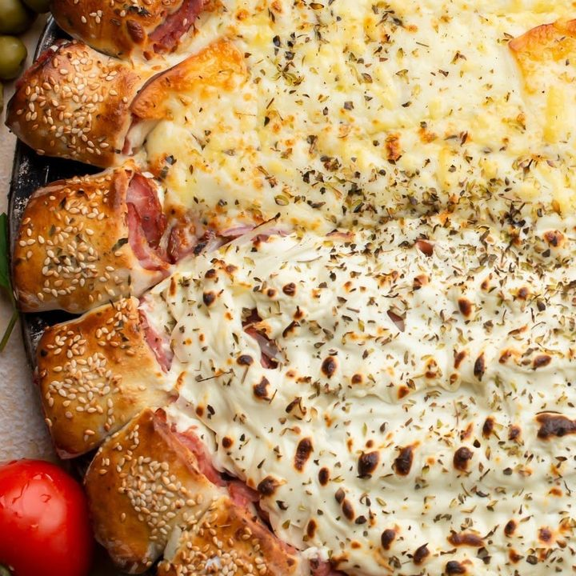
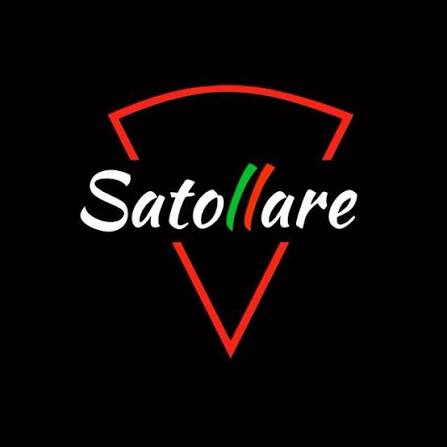
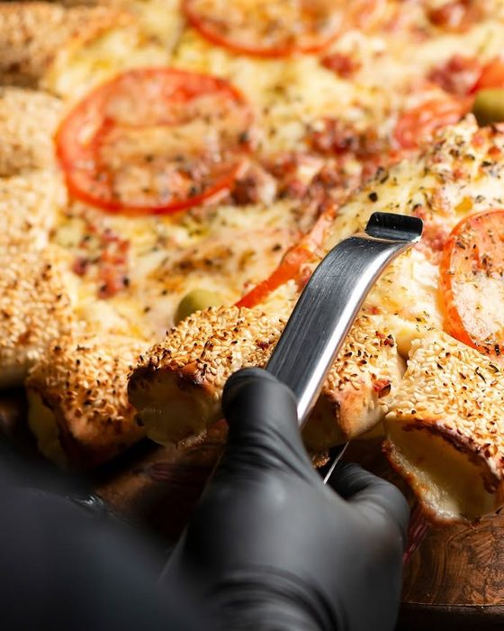
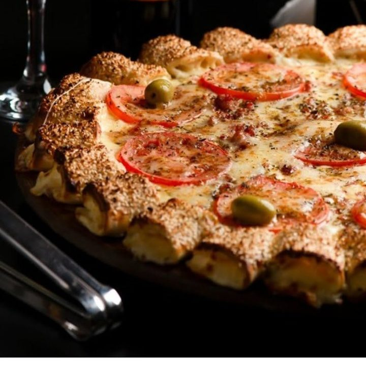
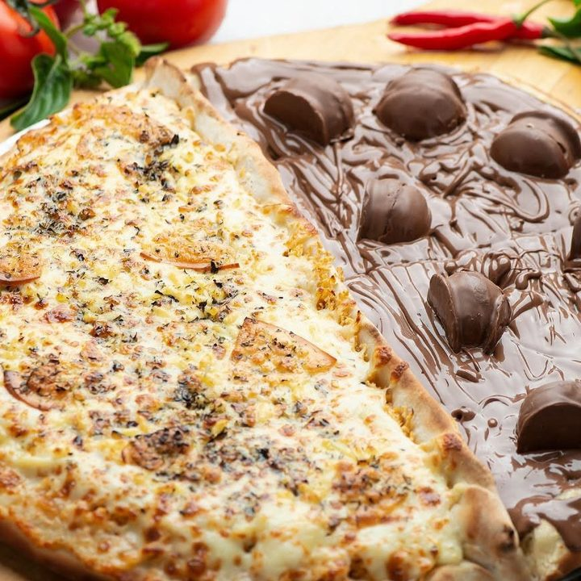

Borda pãozinho
Pãezinhos com gergelim em volta da pizza, recheados do seu jeito. Adicional de R$ 38. Sugestão da casa.
Borda dourada, queijo derretendo e o cheiro do forno chegando antes da caixa. Pizza preparada na hora do pedido, aqui em Sorocaba.


Em italiano, satollare é saciar, encher de vontade boa. É o que a gente procura em cada pizza: massa aberta na hora, ingredientes escolhidos com cuidado e aquele cheiro de forno que chega antes da caixa.
Espaço para a história da casa: quem fundou, desde quando, o que torna a pizza de vocês diferente.
“Sabores que viram memória.”
Mais de 50 sabores salgados, pizzas doces, bordas recheadas e uma carta de vinhos para acompanhar.

Pãezinhos com gergelim em volta da pizza, recheados do seu jeito. Adicional de R$ 38. Sugestão da casa.

Da Calabresa acebolada à Costela desfiada. Broto a partir de R$ 33.

Brigadeiro, Banana nevada, Sonho de Valsa e mais. Broto a partir de R$ 42.
Faça o pedido pelo WhatsApp e acompanhe a Satollare no Instagram para ver os sabores da semana.
Av. Central, 75, Jardim Piazza di Roma
Sorocaba, SP, 18051-727
| Terça a domingo | 18h30 às 23h |
| Segunda | Fechado |
Satollare no Piazza di Roma
Sabores intensos, combinações marcantes e o melhor da alta pizza em cada fatia.
Costela desfiada com cebola e mussarela.
Mignon acebolado e o queijo que você escolher: mussarela (Mignon 1), requeijão (Mignon 2) ou cream cheese (Mignon 3).
Carne seca, ovos, cebola e mussarela.
Combina com o vinho Cabernet Sauvignon.
Mussarela, tomate, molho por cima, requeijão, bacon, parmesão e alho frito.
Mignon em cubos, champignon, mussarela e batata palha.
Frango em cubos, champignon, mussarela e batata palha.
Palmito, requeijão, mussarela, champignon e bacon.
Frango desfiado, calabresa, requeijão, mussarela e bacon.
Mussarela, pepperoni, requeijão, cebola e champignon.
Presunto, calabresa, ovos, cebola, mussarela e bacon.
Sabores que conquistaram o coração dos nossos clientes e viraram queridinhas do cardápio.
Mussarela e requeijão derretidos com perfeição.
Mussarela, requeijão e provolone.
Mussarela, provolone, requeijão e parmesão.
Mussarela, provolone, requeijão, parmesão e gorgonzola.
Mussarela, abobrinha e parmesão.
Presunto, frango, calabresa, ervilha, milho, cebola, mussarela e bacon.
Presunto, tomate, requeijão e mussarela.
Atum ralado com cebola fatiada.
Atum, cebola, mussarela e tomate.
Mussarela, tomate fresquinho e bacon crocante.
Combina com o vinho Cabernet Sauvignon.
Calabresa, ovos, cebola, pimenta calabresa e mussarela.
Batata temperada, requeijão, mussarela e bacon.
Batata frita, mussarela, cheddar e bacon.
Presunto, mussarela e tomate.
Combina com o vinho Jacquez Demi-Sec.
Brócolis, mussarela, bacon e alho frito.
Frango desfiado, calabresa, cebola e mussarela.
Calabresa fininha e cebola.
Combina com o vinho Vô Luiz Seco.
A clássica calabresa, cebola e a mussarela.
Combina com o vinho Vô Luiz Seco.
Calabresa com cebola e cream cheese.
Combina com o vinho Vô Luiz Seco.
Calabresa e requeijão.
Combina com o vinho Vô Luiz Seco.
Lombo canadense, frango desfiado, requeijão, mussarela e tomate.
Frango desfiado, mussarela e bacon crocante.
Mussarela, bacon, milho e barbecue.
Combina com o vinho Jacquez Demi-Sec.
Frango desfiado, mussarela, requeijão, provolone e parmesão.
Palmito, milho, requeijão, mussarela e bacon.
Escarola, mussarela, bacon e alho frito.
Frango desfiado, milho, requeijão, mussarela e tomate.
Frango desfiado com requeijão cremoso.
Frango desfiado, cream cheese e bacon.
Frango desfiado, palmito, requeijão e mussarela.
Lombo canadense com cebola e o queijo da sua escolha: mussarela (Lombo 1), requeijão (Lombo 2) ou cream cheese (Lombo 3).
Lombo canadense, palmito, ovos, ervilha fresca, cebola e mussarela.
Mussarela derretida, tomate fresco, molho por cima e folhas de manjericão.
Combina com o vinho Merlot Andradas.
Milho com mussarela.
Mussarela com rodelas de tomate.
Combina com o vinho Merlot Andradas.
Mussarela, tomate, molho por cima, parmesão e alho frito.
Combina com o vinho Jacquez Demi-Sec.
Frango desfiado, milho e requeijão cremoso.
Palmito macio com mussarela.
Frango desfiado, brócolis, requeijão e mussarela.
Peito de peru e cream cheese.
Pepperoni e seu queijo favorito: mussarela (Pepperoni 1), requeijão (Pepperoni 2) ou cream cheese (Pepperoni 3).
Combina com o vinho Vô Luiz Seco.
Presunto, palmito, ovos, ervilha fresca, cebola e mussarela.
Combina com o vinho Cabernet Sauvignon.
Presunto, calabresa, ovos, ervilha fresca, cebola e mussarela.
Combina com o vinho Cabernet Sauvignon.
Para adoçar o fim da sua experiência com a gente.
Banana, açúcar, canela e chocolate branco.
Combina com o vinho Bordô Suave.
Chocolate cremoso com granulado crocante.
Combina com o vinho Vô Luiz Suave.
Banana com chocolate.
Combina com o vinho Bordô Suave.
Morangos com chocolate.
Combina com o vinho Bordô Suave.
Chocolate com bombom Ouro Branco.
Chocolate com bombom Sonho de Valsa.
Sabores populares, preços irresistíveis. Sempre em promoção, para você aproveitar mais e gastar menos.
Brócolis e mussarela: leve, saborosa e nutritiva.
Frango desfiado com requeijão: cremosidade e sabor num só pedaço.
Presunto, ovo, milho, cebola e mussarela.
Calabresa saborosa e mussarela.
Para deixar sua pizza ainda mais completa.
Escolha um recheio (calabresa, frango ou presunto) e um queijo (requeijão, cheddar ou cream cheese).
Requeijão, cream cheese ou cheddar.
Mussarela.
Requeijão, cream cheese ou cheddar.
Chocolate.
Tinto seco
Macio, elegante e muito agradável. Notas de frutas vermelhas e taninos suaves fazem dele um dos vinhos mais versáteis da carta.
Harmoniza com: Marguerita, Mussarela.
Tinto seco
Complexo, intenso e sofisticado. Ideal para quem aprecia vinhos mais estruturados.
Harmoniza com: Nordestina, Portuguesa, Bacon.
Tinto demi-sec
Acidez equilibrada com leve doçura no final, muito agradável ao paladar.
Harmoniza com: Napolitana, Bauru, Cornbacon.
Tinto seco
Intenso, aromático e marcante. Um vinho encorpado com sabor característico da uva Bordô e excelente equilíbrio.
Harmoniza com: Calabresa, Pepperoni.
Tinto suave
Mais aveludado, aroma intenso de uma uva fresca e excelente equilíbrio.
Harmoniza com: Chocolate com morango, Banana.
Tinto suave
Jovem, leve e extremamente fácil de beber.
Harmoniza com: Brigadeiro, Romeu e Julieta.
PS: os preços estão sujeitos a alteração e podem estar desatualizados. Para confirmar valores, consulte o nosso WhatsApp.